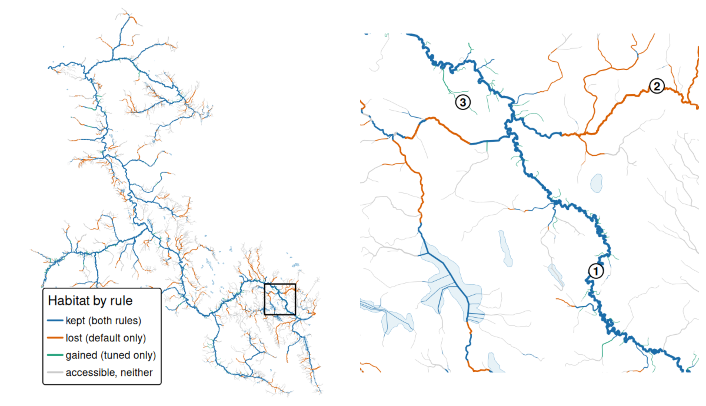

Chinook rearing: choosing link's thresholds from fish records
Source:vignettes/chinook_rearing.Rmd
chinook_rearing.RmdNew Graph Environment maps where fish can live in British Columbia’s
streams with link,
an R package that marks every segment of the provincial stream network
as spawning or rearing habitat for each species, and as reachable by
fish or not. It does this with a configuration: a set
of rules and thresholds for stream size and steepness, one set per
species and life stage. Its standard configuration is called default.
Its thresholds start from the ones bcfishpass
has used for years, a project New Graph contributes to.
This article tests one of those rules, where juvenile chinook salmon
rear, against the province’s electrofishing records: places crews
fished, and whether they caught chinook. It asks which version of the
rule the records support, how sure that answer is, and what the chosen
rule changes on the ground. The tests are part of
knowledge, the R package this article belongs to.
The answer. The records support a different rule
from default: a gradient of at most 9 %, and either
a mean annual flow of at least 0.75 m³/s or a river of at least 3 m³/s
within 1 km downstream. default asks for a
gradient of at most 5.49 %, and a channel at least 1.5 m wide. The
recommended rule draws less habitat, 12.4 % fewer km across the
province, and separates where chinook are caught from where they are not
more sharply.
What does default draw for chinook rearing?
default counts a segment as chinook rearing habitat if
chinook can reach it and it meets the condition for its kind of
water:
- stream: a single-line stream or canal, not one drawn through a wetland, with a gradient of at most 5.49 % and a channel at least 1.5 m wide;
- river: inside a river polygon, at the same gradient, any width;
- wetland: inside a wetland of at least 1 ha;
- lake: inside a lake or reservoir of at least 100 ha.
Reaches confirmed by hand are then added. Last, rearing is kept only where it connects to spawning: spawning anywhere upstream, or within 10 km downstream with no stretch of 5 % or steeper between them. Channel width is modelled only on streams of order 2 and up, so the stream condition never admits a small, unmeasured first-order stream.
Only the stream condition is tuned here. Wetlands and lakes keep their conditions. River polygons keep theirs too, except that they share the stream condition’s gradient maximum, so a new maximum moves them as well, though the tuning scored no visit in a river polygon.
What evidence is used?
The province’s stream atlas divides British Columbia into watershed groups, large basins such as the Bulkley. They are the unit everything below is counted in and tested on.
Each stream segment carries a gradient, a flow and, where one is
modelled, a channel width, all from one link run
(20261017_004619-3f4c713b). The streams and their gradients are the BC
Freshwater Atlas, loaded through fwapg. Flow is the mean annual flow wet
publishes: mostly the Pacific Climate Impacts Consortium’s routed model,
tied to the atlas by fwapg, with wet’s own water balance
where that model does not reach or reads far too low. Channel width is
fwapg’s model, on streams of order 2 and up.
The evidence is the provincial Fisheries Data Information System
(FDIS) electrofishing records, placed on link’s stream
segments. A visit counts when it is on the kind of stream the stream
condition covers, outside wetlands of 1 ha or more and lakes of 100 ha
or more. It must have a fished area of 10 to 10,000 m², and be in a
group where link expects chinook. It must also have no
natural barrier to chinook downstream, and no record code that could
hide a catch. After checks on placement, date and effort, that leaves
7,123 visits in 104 groups. A group where chinook were always or never
caught cannot tell rules apart, so the tests use the 43 groups with both
outcomes: 4,490 visits, of which 215 caught
chinook.
Which rules were tried?
Each candidate rule sets three things, the same three
default sets:
- a size floor: a mean annual flow (MAD, modelled) of 0.1, 0.15, 0.2, 0.28, 0.35, 0.5, 0.75 or 1 m³/s, or a channel width of 1, 1.5, 2, 3 or 4 m;
- a gradient maximum of 3 %, 4 %, 5.49 %, 7 % or 9 %;
- a near-a-river exception: none, or a stream below the size floor still counts when a river of at least Q m³/s is within D m downstream (Q of 1, 3, 5, 10, 20, 30 or 50; D of 100, 250, 500, 1,000, 2,000 or 5,000).
Every combination is one rule, 2,795 in all, default
among them. The exception is there because juvenile chinook move up from
large rivers into small streams close by.
How is a rule scored?
A rule is worth having if it predicts where chinook are caught in a watershed it was not built from. So the 43 groups are split at random into 5 sets, called folds. A model learns how much the rule matters from four folds and predicts the visits in the fifth, and this repeats until every group has been predicted once. The model also allows for fished area, data set and era. Each held-out group’s own overall catch rate is the one thing fitted on its own visits, and that costs every rule the same.
The score adds up, over every predicted visit, how far the prediction was from what the crew found (the deviance). Lower is better. Only differences between rules matter: the model with no rule at all scores 231.9 worse than the best rule.
Which rules can the data not tell apart?
Scores carry noise: another set of watersheds would rank close rules differently. So the choice is not simply the best score. Every rule within one standard error of the best, measured across watershed groups, is kept. That set is the region: the rules the records cannot rank. It holds 23 rules, all of one shape:
- a flow floor of 0.35 to 1 m³/s, never a width floor;
- the exception, with a river of 1 to 10 m³/s within 1 km to 2 km;
- a gradient maximum of 7 % or 9 %.
default scores 196.3 worse than the best rule, with a
standard error of 81.6, so it is outside the region.

How good each value of each setting can be. Each point is the best score of any rule using that value, as deviance above the best rule, so lower is better. A filled point has at least one rule in the region. A ring marks the value default uses.
Which rule is recommended?
The choice was fixed before any rule was scored: from the region, the
rule closest to default. Every rule in the region differs
from default in all three settings, so the best scorer is
recommended. It calls fewer visits habitat and takes in as many
catches:
| Rule | Visits it calls habitat | Of those, chinook caught | Catch rate on habitat | Catch rate elsewhere |
|---|---|---|---|---|
| default | 2,330 | 165 | 7.1 % | 2.3 % |
| recommended | 1,047 | 166 | 15.9 % | 1.4 % |
How firm is the choice?
A gap in score is a real difference only when it is large against its noise and survives being checked again. These checks, fixed before the run, ask whether the choice rests on chance or on reusing the same data to choose and to score.
-
The gap against its noise. Each gap between two
rules has a standard error, from how much it varies between watershed
groups. A gap under one standard error cannot be told from noise: that
is the region.
defaultis 2.4 standard errors worse than the best rule. -
Other random splits. The split into folds is
random, set by a number called a seed. Scored again on 4 other seeds,
the recommended rule is in the region on 4 of them and
defaulton 0. 3 of the 4 pick the same rule at a different gradient; the other picks a gradient of at most 5.49 %, and either a mean annual flow of at least 0.5 m³/s or a river of at least 3 m³/s within 2 km downstream. -
Choosing on some groups, scoring on others.
Choosing a rule on four folds and scoring it on the fifth, the chosen
rule beats
defaultin 4 of the 5 folds, and beats it over all five together. The separation is partial, because each fold’s choice leans on scores from models that had seen that fold. -
Drawing the groups again. Repeating the choice on
200 random redraws of the groups, the exact recommended rule comes back
22 % of the time, but its parts are steadier: a flow floor in 100 % of
draws, 0.75 m³/s in 55 %, and a 3 m³/s river in 76 %. The gradient
maximum varies most: 9 % in 40 %, 7 % in 34 %, and
default’s 5.49 % in 26 %.
The shape is settled: a flow floor near 0.75 m³/s and an exception for small streams near a river. The gradient maximum is the least settled part.
Steeper limits. 9 % was the steepest limit in the
rules tried. Scored again on the same records with limits up to 30 %
among the rules from the start, the same procedure picks 15 %, with a
smaller river in the exception: a gradient of at most 15 %, and either a
mean annual flow of at least 0.75 m³/s or a river of at least 1 m³/s
within 1 km downstream. The best 9 % rule is 19.7 behind it, with a
standard error of 22.1. 4 of the 4 other seeds also pick a 15 % limit,
and redraws of the groups choose one in 43 % of draws and 9 % in 0 %.
Chosen on four folds and scored on the fifth, the longer list’s choices
lose to default over all five together, 1,389.4 against
1,347.0, where choices from the rules up to 9 % beat it at 1,234.5.
Every limit tried from 7 % to 30 % has rules in the region, so the records cannot place the limit in that range. The recommended rule keeps 9 %, the pick from the rules fixed before the run, because every species is tuned on one shared ladder of gradient limits, and a longer ladder is a change for all of them at once.
Why does a nearby river matter?
After the choice, one model was fitted to the visits that carry a modelled flow, with flow and distance to a river of at least 3 m³/s as one surface. The table reads the fitted chance of a catch on one standard visit. It stops below 3 m³/s, because a stream that size is itself the river:
| Stream flow (m³/s) | 100 m | 300 m | 1 km | 3 km | 10 km | 50 km or more |
|---|---|---|---|---|---|---|
| 0.1 | 10.3 % | 6.8 % | 2.5 % | 0.6 % | 0.2 % | 0.4 % |
| 0.3 | 10.0 % | 8.2 % | 4.0 % | 1.3 % | 0.5 % | 0.9 % |
| 0.75 | 9.6 % | 8.9 % | 5.5 % | 2.4 % | 1.2 % | 1.6 % |
| 2 | 9.4 % | 9.1 % | 6.9 % | 4.3 % | 2.6 % | 2.7 % |
Within 100 m of a river the chance is about the same whatever the stream’s flow, 9.4 % to 10.3 %. Ten kilometres away it rises with flow, from 0.2 % at 0.1 m³/s to 2.6 % at 2 m³/s. That is the shape the recommended rule draws: beside a river a small stream counts, and away from one only a stream above the floor does. The chance falls off past a few hundred metres from the river, so 1 km sits on the way down. Steepness matters less: at 9 % the chance is about 51 % of what it is at 2 %. The model fits smooth curves, so it cannot show a step at a threshold; each threshold is where habitat and non-habitat separate best on held-out groups, a cut across a slope.
What does it change on the ground?
Both rules were run through all of link’s steps on every
one of the 125 watershed groups link classifies for
chinook.
| km | |
|---|---|
| Habitat under default | 101,184 |
| Habitat under the recommended rule | 88,641 |
| Lost, all reasons | 24,832 |
| Lost: wide enough for default, below the flow floor, no river close | 24,532 |
| Gained, all reasons | 12,289 |
| Gained through the exception (small streams near a river) | 9,665 |
| Gained through the exception, on first-order streams | 6,948 |
The change varies by group, from -73.6 % to 30.0 %; 48 of the 125
groups gain. In the Bulkley the recommended rule draws 1,608 km against
default’s 2,123 (-24.3 %).

Chinook rearing in the Bulkley (BULK) under each rule: kept by both, lost (default only) and gained (the legend’s ‘tuned only’, meaning the recommended rule only). Left, the whole group with the window outlined; right, the 12 km window, with the numbered examples the table below describes. Line width follows stream order.
| # | Case | Flow (m³/s) | Channel width (m) | Gradient | Downstream to a river | default | Recommended |
|---|---|---|---|---|---|---|---|
| 1 | Kept by both | 3.6 | 19 | 0.06 % | 0 m | habitat | habitat |
| 2 | Lost: below the flow floor, no river close | 0.48 | 6.7 | 2.16 % | 6.8 km | habitat | not habitat |
| 3 | Gained: small stream near a river | 0.00048 | none modelled | 2.23 % | 940 m | not habitat | habitat |
The examples show what both rules keep and the two largest changes.
Two smaller gains through the stream condition are not among them:
streams between 5.49 % and 9 % steep, which only the recommended
gradient maximum admits (1,411 km across the province), and streams
whose flow passes the floor where default’s width condition
fails or has no width (449 km). The rest of the change comes from the
connectivity pass, which keeps different stretches under each rule
because each rule’s habitat connects to spawning differently (535 km
gained, 301 km lost), and from river polygons and mixed causes (230 km
gained).
Orange is mostly the upper reaches of tributaries: flow grows downstream, so a tributary keeps its lower reach and loses the part where its flow falls below the floor more than 1 km from a river. Green is short reaches of small streams beside a river, which the exception adds.
Two checks. On the 10,515 electrofishing visits with
a fished area of 10 to 10,000 m² on accessible streams (wetland lines
included), canals, reservoir banks and river lines in the 125 groups,
chinook were caught on 17 % of visits on the recommended rule’s habitat
and 1.5 % elsewhere, against 14 % and 2.2 % for default.
These visits overlap the ones the tuning scored, so this shows the rule
does what it was chosen to do. Other sources record chinook at 826
places within 100 m of an accessible single-line stream or canal not
drawn through a wetland, spawning-only places left out; no rule was
scored on them. The share of those places on the recommended rule’s
habitat is 3.3 times the rule’s share of that stream length, against 2.5
for default.
What should you know before using it?
-
It can feed
linkdirectly. The flow floor and the gradient limit are stored under the nameslinkalready uses for those settings,rear_mad_minandrear_gradient_max. The near-a-river exception is stored as two numbers, the river’s flow and the distance to it, ready for any configuration that adds that check. - It is about young chinook in streams. It was fitted to juvenile chinook caught by electrofishing in streams, and says nothing about spawning. Wetlands and lakes keep their own conditions. River polygons share the stream gradient limit, so they get 9 % too, although no fished site in a river polygon was used to choose it.
- It draws less habitat, in the places chinook are caught. It was chosen because chinook were caught far more often inside it than outside it, not because it takes in every place they were caught: 15.9 % of fished sites inside it caught chinook, and 1.4 % outside it.
-
The cut-offs are good choices, not hard limits.
Chinook get gradually less common as streams get smaller and steeper;
there is no flow or slope where they stop. Nearby cut-offs fit the
records almost as well: flow floors from 0.35 to 1 m³/s, and gradient
limits of 7 % or 9 %. The flow floor is the firmer choice. Steeper
limits, scored later up to 30 %, fit as well or slightly better, though
choices from that longer list, scored on groups left out of the choice,
do worse than
default. So 9 % is one choice among limits from 7 % to 30 % that the records cannot rank. - On the map, distance is measured from the bottom of each segment. The exception asks whether a large river is within 1 km downstream. To choose the rule, that distance was measured from each fished site. On the map it is measured from the downstream end of each stream segment, so when that end is within 1 km of the river the whole segment counts, even the part farther up.
Software and how to cite it
-
link: the habitat model and its configurations. -
fresh: runslink’s rules on the BC Freshwater Atlas. -
wet: the flow on each segment. -
knowledge: the fish records, the tests and this article. Cite it as:
Irvine A (2026). knowledge: Watershed-Group Fisheries Background. R package version 0.4.6, https://newgraphenvironment.github.io/knowledge/.